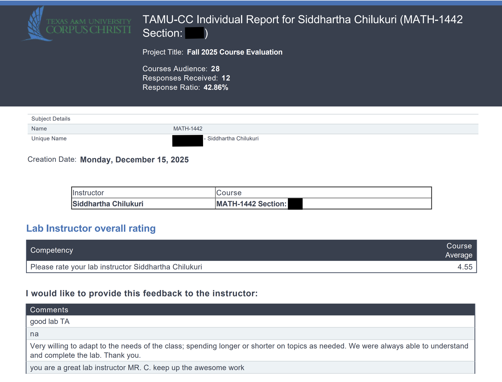
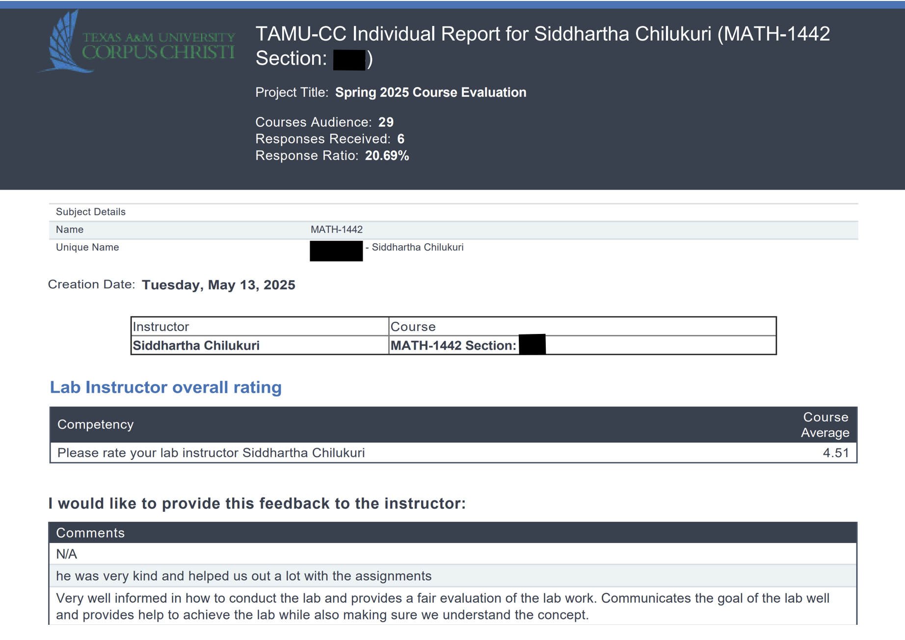
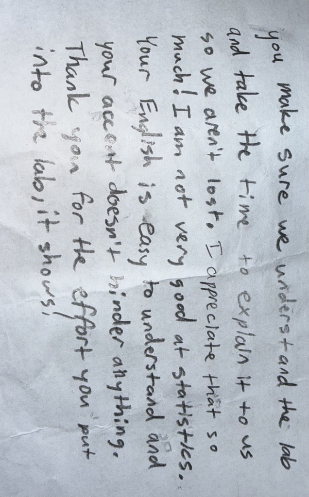

Hello, I'm Siddhartha.
I am a Mathematics and Statistics Educator with a strong foundation in supporting core secondary math instruction, quantitative reasoning, and data science. I have redesigned full university statistics lab sequences and am uniquely equipped to help school districts bridge the gap between foundational mathematics and advanced AP or CTE technology pathways.
About & Teaching Philosophy
During my graduate studies in Data Science, I discovered my true passion in the classroom. Working closely with students in university statistics labs, I saw firsthand how clear explanations, patient support, and real-world applications transform "math anxiety" into genuine comprehension.
My Teaching Philosophy: I believe students learn mathematics best when they can connect ideas to meaning. My approach prioritizes concept understanding, visual interpretation, and real-world application over rote memorization alone. Whether teaching foundational Algebra or advanced Data Science, my goal is to create a classroom environment where students feel supported, challenged, and encouraged to think critically.
Texas Educator Certification Progress
I am actively progressing through my alternative certification pathway with Texas Teachers of Tomorrow. I am "hired-ready" with my content exams cleared.
Officially admitted to the Texas Teachers of Tomorrow alternative certification program.
Successfully passed the 735 TX PACT: Mathematics: Grades 7-12 content exam with a score of 280/300.
Scheduled to complete the TExES 235 Mathematics 7-12 content exam.
Expected completion of all required courses, Field-Based Experiences (FBEs), and issuance of the Intern Certificate.
Expected completion of the Pedagogy and Professional Responsibilities (PPR) Exam.
Expected issuance of the Standard Texas Educator Certificate.
STEM & CTE Readiness
In addition to core mathematics, I am uniquely positioned to support district initiatives in Career and Technical Education (CTE) and advanced STEM pathways.
AP Statistics & Quantitative Reasoning
Extensive experience teaching probability, distributions, statistical inference, and hypothesis testing. I specialize in building student intuition around chance and variability using real-world decision-making scenarios.
Elements of Data Science
Fluent in integrating programming (Python, R) and statistical software (Jamovi, Tableau) into coursework. I bridge theoretical math with applied data science, preparing students for emerging high-tech career pathways.
Secondary Math Course Competencies
A comprehensive breakdown of the core and advanced mathematics courses I am equipped to teach, aligned with Texas standards.
AP Statistics
Topics: Exploring data; Sampling and experimentation; Probability and simulation; Statistical inference.
Focus: Designing studies and using data to make formal conclusions.
AP Precalculus
Topics: Trigonometric functions and identities; Vectors; Parametric and Polar equations; Sequences and Series.
Focus: Advanced analytical methods and bridge to Calculus.
Elements of Data Science
Topics: Statistical modeling; Managing large datasets (Big Data); Predictive analysis; R Markdown software.
Focus: Programming-based data manipulation and predictive modeling.
Algebra II
Topics: Systems of equations; Complex numbers; Rational, Logarithmic, and Square root functions; Data analysis.
Focus: Advanced function modeling and preparing for higher-level STEM math.
Algebra I
Topics: Linear equations, inequalities, functions, polynomials, factoring.
Focus: Foundational algebraic reasoning and problem-solving.
Geometry
Topics: Logical reasoning and proofs; Coordinate and transformational geometry; Trigonometry; Properties of 2D & 3D figures.
Focus: Spatial reasoning, calculating area/volume, and geometric proofs.
Mathematical Models
Topics: Personal finance math; Social science applications; Math in art, music, and architecture.
Focus: Applying algebra and geometry to real-world, non-STEM scenarios.
Advanced Quantitative Reasoning (AQR)
Topics: Probability; Numerical reasoning; Statistical studies; Network and graph theory.
Focus: Critical thinking for business and social science pathways.
Teaching & Curriculum Experience
Lead Statistics Lab Instructor & Curriculum Developer
Texas A&M University–Corpus Christi
- Spearheaded the fully funded instructional redesign of a core statistics lab course serving 400+ students annually.
- Authored and implemented 9 complete lab modules, utilizing real-world datasets to bridge theoretical math with applied data science.
- Delivered in-person instruction across multiple lab sections, supporting 50+ students and translating statistical concepts into clear, visual, and application-based lessons.
- Transitioned 100% of the lab curriculum to open-source Jamovi and R, improving student accessibility and equity.
Graduate Teaching Assistant
Texas A&M University–Corpus Christi
- Instructed 150+ students across multiple lab sections, building foundational quantitative reasoning and mathematical modeling skills.
- Evaluated and graded 300+ assignments per semester, providing rapid, individualized feedback to correct mathematical misconceptions.
- Integrated MATLAB, Excel, and Python into coursework to build early data literacy for non-STEM majors.
Instructional Projects & LMS Management
MATH 1442 Labs Curriculum Restructure
As the Lead Curriculum Developer, I completely overhauled the university's "Statistics for Life" lab sequence. I transitioned the curriculum away from proprietary software to the open-source Jamovi platform, making it free and accessible to all students. I researched datasets, designed assignments, and wrote the instructional lab manuals from scratch.
Canvas LMS Proficiency
Extensive experience structuring, managing, and maintaining complex course pages on Canvas. I am highly proficient in organizing modules, managing assignment prerequisites, maintaining clear student communication via announcements, and utilizing automated grading tools.


Student Feedback & Impact
Proof of my commitment to student understanding, patience, and adaptable instruction.



Resume & Contact
I am actively seeking secondary mathematics roles in Texas school districts, particularly those looking to expand their quantitative and data science offerings.
- 📧 Email: siddhartha.chilukuri.193@gmail.com
- 📞 Phone: +1 (361) 288-5043
- 📍 Location: Corpus Christi, TX